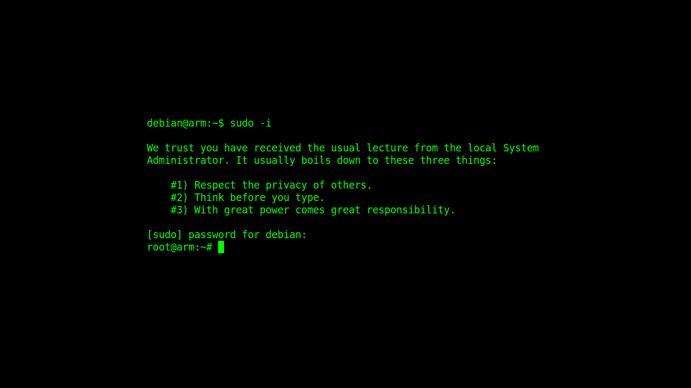

About
Computer Science teacher at The British School Rio de Janeiro. Graduate in Information and Communication Technology from FAETERJ institute of technology. Worked as a software developer in C++ language at the SIRLab (robotics laboratory). Worked as an intern at the LNCC (scientific computing laboratory) in the area of control and simulation of stochastic systems. Always participating in workshops, courses, and competitions in the technology area.